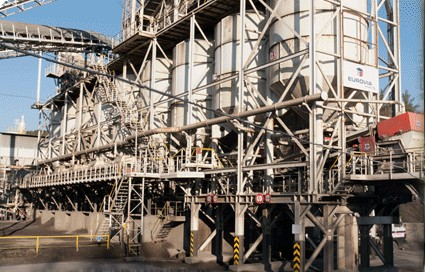
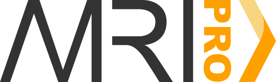
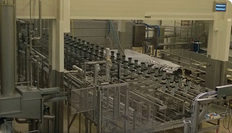
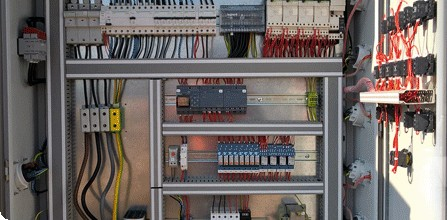
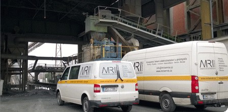

Přerov · od roku 2013
Od trafostanice přes kabelové rozvody až po řídicí a vizualizační pracoviště obsluhy. Navrhneme, nainstalujeme, zautomatizujeme a postaráme se o servis.

Služby
Navazujeme na dlouhou přerovskou tradici dodávek a instalací technologických linek pro kamenoprůmysl. Každou zakázku stavíme na požadavcích provozu, ne na katalogu.
Posoudíme současný stav a navrhneme napájení, instalaci a automatizaci včetně cenové kalkulace.
Moderní přístroje a chytrá řešení s ohledem na spotřebu energie a lidskou práci.
Od trafostanic přes kabelové rozvody po řídicí a vizualizační pracoviště. Bezpečně, pod dohledem vedoucího montáže.
Řídicí systém a vizualizace, které obsluha pochopí na první pohled. U nových linek se vzdálenou správou.
Záruční i pozáruční, také mobilních technologií. Smluvním zákazníkům do 24 hodin.
Pravidelná kontrola drží zařízení dlouhodobě provozuschopné a bezpečné.
Vlastní software

Informační systém pro sběr, vizualizaci a analýzu dat z drtičů, vah, pásových vah a podavačů. Bez ohledu na výrobce stroje nebo komunikační protokol.
Reference



Pracujeme pro provozy v Česku i na Slovensku. [Loga zákazníků, se kterými se dohodneme na zveřejnění.]
Je to prostředek, jak efektivně využít energie, suroviny a technologii. Naším cílem je co nejvyšší kvalita díky moderním technologiím a prvkům automatizace, ale hlavně spokojený zákazník. Firmu vede jednatel Marek Drgáč, provozovnu máme v Přerově na Tovačovské ulici.
Provozovna
Tovačovská 3457/4a, 750 02 Přerov
tel. +420 581 737 934
info@mriservis.cz
Marek Drgáč, jednatel
+420 603 146 529 · drgac@mriservis.cz